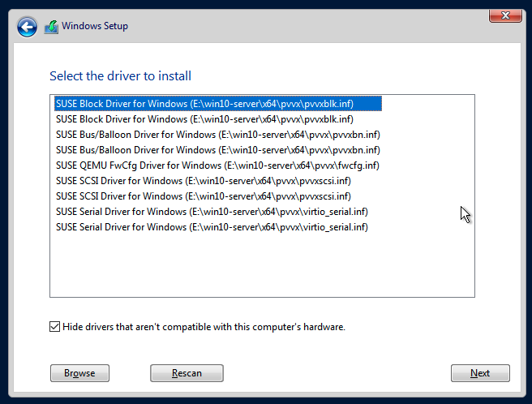

Crea una máquina virtual de Windows
Crea una o más máquinas virtuales desde la página de Máquinas Virtuales.
|
Para crear máquinas virtuales de Linux, consulta esta página. |
Instrucciones para crear una máquina virtual de Windows
Sección de encabezado
-
Crea una instancia de máquina virtual única o múltiples instancias de máquinas virtuales.
-
Establece el nombre de la máquina virtual.
-
(Opcional) Proporciona una descripción para la máquina virtual.
-
(Opcional) Selecciona la plantilla de máquina virtual
windows-iso-image-base-template. Esta plantilla añadirá un volumen con los controladoresvirtiopara Windows.
Pestaña de básicos
-
Configura el número de
CPUnúcleos asignados a la máquina virtual. -
Configura la cantidad de
Memoryasignada a la máquina virtual.

|
Como se mencionó anteriormente, se recomienda que utilices la plantilla de máquina virtual de Windows. La sección |
|
Los valores |
Pestaña de Volúmenes
-
El primer volumen es un
Image Volumecon los siguientes valores:-
Name: El valorcdrom-diskse establece por defecto. Puedes mantenerlo o cambiarlo. -
Type: Seleccionecd-rom. -
Image: Selecciona la imagen de Windows que se va a instalar. Consulta Subir Imágenes para la descripción completa sobre cómo crear nuevas imágenes. -
Size: El valor20se establece por defecto. Puedes cambiarlo si tu imagen tiene un tamaño mayor. -
Bus: El valorSATAse establece por defecto. Se recomienda que no lo cambies.
-
-
El segundo volumen es un
Volumecon los siguientes valores:-
Name: El valorrootdiskse establece por defecto. Puedes mantenerlo o cambiarlo. -
Type: Seleccionedisk. -
StorageClass: Puedes usar la StorageClass por defectoharvester-longhorno especificar una personalizada. -
Size: El valor32se establece por defecto. Consulta los requisitos de espacio en disco para Windows Server y Windows 11 antes de cambiar este valor. -
Bus: El valorVirtIOse establece por defecto. Puedes mantenerlo o cambiarlo por las otras opciones disponibles,SATAoSCSI.
-
-
El tercer volumen es un
Containercon los siguientes valores:-
Name: El valorvirtio-container-diskse establece por defecto. Puedes mantenerlo o cambiarlo. -
Type: Seleccionecd-rom. -
Docker Image: El valorregistry.suse.com/suse/vmdp/vmdp:2.5.4.2se establece por defecto. Recomendamos no cambiar este valor. -
Bus: El valorSATAse establece por defecto. Recomendamos no cambiar este valor.
-
-
Puedes añadir discos adicionales utilizando los botones
Add Volume,Add Existing Volume,Add VM ImageoAdd Container.

Pestaña de Redes
-
La Red de Gestión se añade por defecto con los siguientes valores:
-
Name: El valordefaultse establece por defecto. Puedes mantenerlo o cambiarlo. -
Model: El valore1000se establece por defecto. Puedes mantenerlo o cambiarlo por las otras opciones disponibles del menú desplegable. -
Network: El valormanagement Networkse establece por defecto. No puedes cambiar esta opción si no se ha creado ninguna otra red. Consulta Red de VM para la descripción completa sobre cómo crear nuevas redes. -
Type: El valormasqueradese establece por defecto. Puedes mantenerlo o cambiarlo por la otra opción disponible,bridge.
-
-
Puedes añadir redes adicionales haciendo clic en
Add Network.

|
Cambiar la configuración de |
Pestaña de programación de nodos
-
Node Schedulingestá configurado por defecto enRun VM on any available node. Puedes mantenerlo o cambiarlo por las otras opciones disponibles del menú desplegable.

Pestaña de opciones avanzadas
-
OS Type: El valorWindowsse establece por defecto. Se recomienda que no lo cambies. -
Machine Type: El valorNonese establece por defecto. Se recomienda que no lo cambies. Consulta la documentación de Tipo de máquina KubeVirt antes de cambiar este valor. -
(Opcional)
Hostname: Establece el nombre de host de la máquina virtual. -
(Opcional)
Cloud Config: Tanto los valoresUser DatacomoNetwork Datase establecen por defecto. Actualmente, estas configuraciones no se aplican a máquinas virtuales basadas en Windows. -
(Opcional)
Enable TPM,Booting in EFI mode,Secure Boot: Tanto el dispositivo TPM 2.0 como el firmware UEFI con arranque seguro son requisitos imprescindibles para Windows 11.
|
Actualmente, solo se admiten vTPMs no persistentes, y su estado se borra después de cada apagado de la máquina virtual. Por lo tanto, Bitlocker no debe estar habilitado. |

Sección de pie de página
Una vez que todas las configuraciones estén en su lugar, haz clic en Create.
|
Si necesitas añadir configuraciones avanzadas, puedes editar la configuración de la máquina virtual directamente haciendo clic en |
Instalación de Windows
-
Selecciona la máquina virtual que acabas de crear y haz clic en
Start. -
Arranca en el instalador y sigue las instrucciones proporcionadas por el instalador.
-
(Opcional) Si estás utilizando volúmenes basados en
virtio, necesitarás cargar el controlador específico para permitir que el instalador los detecte. Si estás utilizando la plantilla de máquina virtualwindows-iso-image-base-template, la instrucción es la siguiente:-
Haz clic en
Load driver, y luego haz clic enBrowseen el cuadro de diálogo, y busca una unidad de CD-ROM con un prefijoVMDP-WIN. A continuación, encuentra el directorio del controlador según la versión de Windows que estás instalando; por ejemplo, Windows Server 2012r2 debería expandirwin8.1-2012r2y elegir el directoriopvvxdentro.
-
Haz clic en
OKpara permitir que el instalador escanee este directorio en busca de controladores, eligeSUSE Block Driver for Windowsy haz clic enNextpara cargar el controlador.
-
Espera a que el instalador cargue el controlador. Si eliges la versión correcta del controlador, los volúmenes
virtioserán detectados una vez que el controlador esté cargado.
-
-
(Opcional) Si estás utilizando otro hardware basado en
virtiocomo un adaptador de red, necesitarás instalar esos controladores manualmente después de completar la instalación. Para instalar controladores, abre el disco de controladores VMDP y utiliza el instalador según tu plataforma.
La matriz de soporte del paquete de controladores VMDP para Windows es la siguiente (supón que la ruta de la unidad CD-ROM de VMDP es E):
| Versión | Admitido | Vía del controlador |
|---|---|---|
Windows 7 |
No |
|
Windows Server 2008 |
No |
|
Windows Server 2008r2 |
No |
|
Windows 8 x86(x64) |
Sí |
|
Windows Server 2012 x86(x64) |
Sí |
|
Windows 8.1 x86(x64) |
Sí |
|
Windows Server 2012r2 x86(x64) |
Sí |
|
Windows 10 x86(x64) |
Sí |
|
Windows Server 2016 x86(x64) |
Sí |
|
Windows Server 2019 x86(x64) |
Sí |
|
Windows 11 x86(x64) |
Sí |
|
Windows Server 2022 x86(x64) |
Sí |
|
|
Si no utilizaste la plantilla |
|
Para obtener instrucciones completas sobre cómo instalar el controlador y las herramientas VMDP, consulta la documentación en https://documentation.suse.com/sle-vmdp/2.5/html/vmdp/index.html |
Problemas conocidos
ISO de Windows incapaz de arrancar al usar el modo EFI
Al usar el modo EFI con Windows, puedes encontrar que el sistema arranca con otros dispositivos como HDD o la shell UEFI como la que se muestra a continuación:

Eso es porque Windows mostrará un Press any key to boot from CD or DVD… para permitir que el usuario decida si arrancar desde la ISO del instalador o no, y necesita intervención humana para permitir que el sistema arranque desde CD o DVD.

Alternativamente, si el sistema ya ha arrancado en la shell UEFI, puedes escribir reset para forzar al sistema a reiniciarse de nuevo. Una vez que aparezca el aviso, puedes presionar cualquier tecla para permitir que el sistema arranque desde la ISO de Windows.
La VM se bloquea cuando la memoria reservada no es suficiente
Hay un problema conocido con la máquina virtual de Windows cuando se le asigna más de 8GiB sin suficiente memoria reservada configurada. La máquina virtual se bloquea sin previo aviso.
Esto se puede solucionar asignando al menos 256MiB de memoria reservada a la plantilla en la pestaña de Opciones Avanzadas. Si 256MiB no funciona, prueba 512MiB.

BSoD (Pantalla Azul de la Muerte) en el primer arranque de Windows
Hay un problema conocido con la máquina virtual de Windows que utiliza Windows Server 2016 y versiones posteriores, un BSoD con el código de error KMODE_EXCEPTION_NOT_HANDLED puede aparecer en el primer arranque de Windows. Todavía estamos investigando y solucionaremos este problema en la próxima versión.
Como solución alternativa, puedes crear o modificar el archivo /etc/modprobe.d/kvm.conf dentro de la instalación de SUSE Virtualization actualizando /oem/99_custom.yaml como se indica a continuación:
name: Harvester Configuration
stages:
initramfs:
- commands: # ...
files:
- path: /etc/modprobe.d/kvm.conf
permissions: 384
owner: 0
group: 0
content: |
options kvm ignore_msrs=1
encoding: ""
ownerstring: ""
# ...|
Esta sigue siendo una solución experimental. Para más información, por favor consulta este problema y haznos saber si has encontrado algún problema después de aplicar esta solución alternativa. |